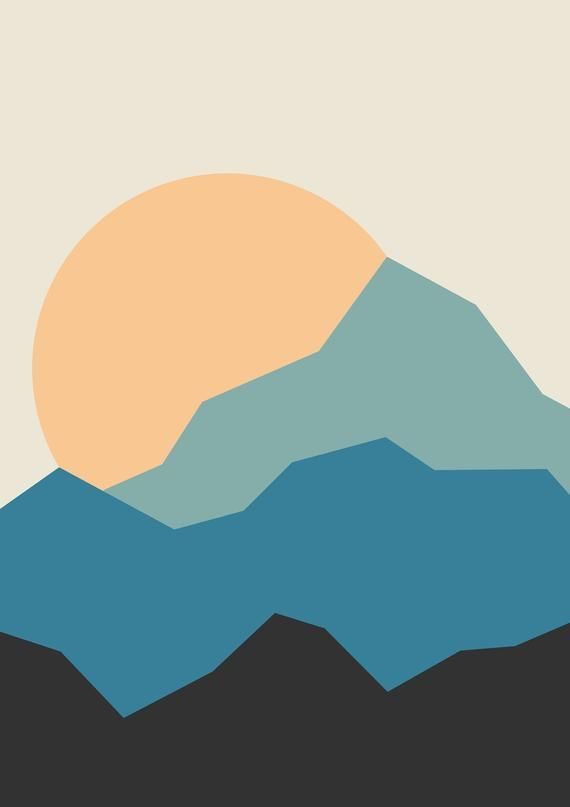

This project was an attempt to deriv what the core elements of the below image are.
Reverse engineer those core elements into a ruleset. Then use that ruleset to generate
an infinite set of images that approximate the aesthetics of the original image. For
this first attempt at procedural art I chose a minimal mountainscape because, while
I find them pleasant, they are not incredibly complex.

Notes:
1. I couldn't find the original creator of the image. It seems to originally
have been from an etsy store, but that store no longer seems to exist.
2. It might be interesting to note that the colors, while randomized between drawings,
are consistently relative to each other respective to the color differences in the
original image. For those interested Adobe has a very interesting
color tool
that I used to preserve the color relation.